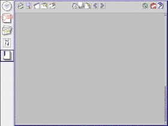

Microcomputers are more complex than ever before, but also more powerful. More functions, more features, more graphics, more programs, has increased as the times gone by. But did it become better? Sometimes it did, as e.g. wordprocessors gained typefaces which wasn't possible earlier on. Nice layout to wordprocessors moved them futher away from their predecessors the typewriters, and futher toward the printing process. A gap which paradoxically was much smaller from the beginning. Regrettably as complexity increased, more unnecessary features, functions, graphics etc. was added. This has been the central machinery for Microsoft for some years: add more features. But where we gained in power, crap increased the complexity. A silent resistance againt this has been not to use all of the new technology. Sometimes just keeping the old was fine.
The complexity was also incorporating problems with learning, understanding, using, and keeping the systems fresh, updated. We don't use all of the program or computer skills, we only use part of them. In the Swedish press Datateknik no. 19 Robert Glass proclaims: "The keywords for future interfaces will be design and looks /.../ The first company which will make an elegant and simple wordprocessor, will be able to compete with Word. Competing with functions will not do anymore." (p. 26). But then Glass was involved with the old Xerox Star, and System 7 on the Macintosh. Both elegant and nice when they appeared. The Xerox Star I remember for its different appearence, its new graphical interface. It was introduced at technical shows in Sweden. It was clean and nice, but when you tried to do anything, it just crashed and the Xerox personel rushed off to push the youngsters away. (I still must have been a young teenager then.) The System 7 was perhaps intresting when it came, but it failed also in precisely the area Glass complaines about: it wasn't nice and easy. System 7 was more features than new ideas, regrettably. And perhaps it was this that killed it, and the future survival of MacOS.
Sun Microsystems has developed the wide spread language Java. The most revolutionary aspect of Java is perhaps its virtual machine, the JVM. The virtual machine can run on several different platforms, and still run the same program, from the same original sourcecode. No rewrite is necessary.
Sun have also begun to develop other aspects from the Java idea. One such aspect is the Network Computer, the NC. The NC isn't really such a novel product, but it inherits ideas from partly intrests of manufacturers, companies, computer industry, but also from developers of the Internet, of computers, of software. A surprise is perhaps that the NC also inherits very old ideas, from way back such as the mainframe and the terminal.
Sun have designed the JavaOS, which can run on their NC. Recently Sun demonstrated the NC, which loaded its operating system from the net in about two minutes. One thing about the NC is that it is suppose to download all of its needed software from the net, either Intranet or Internet. It is supposed to have no disc, but Sun recently modified this principle.
HotJava Views is written in Java. Sun declares that HotJava Views is the first application written for their NC, Network Computer. Perhaps the most intresting about HotJava Views and the discussion which we carry out here, is its simplified design.
I will not futher explain Java, the NC, or the connected operating systems, but move on to the graphical interface discussion.
The HotJava Views is designed for a very special purpose. It's not supposed to solve general problem for anyone. Instead it has a certain potential group (so called transaction workers) , which will (probably) use it. First of all they will try the product on employees for ease of "communication and coordination". This is also a rather recent idea, to develop specific applications for specific groups. Many companies have tried to develop huge program which could be used by anyone, such as in wordprocessing the monsters Word and WordPerfect. Now (we hope) this idea must be buried, and lightware only for my specific needs are created.
The same transaction workers today work with IBM 3270 terminals or PCs, which are connected to a mainframe computer. There is thus no revolution with regard to ways of working or really technical new solution.
But there seems to lurk some old centralizing idea also in this. This appoximately was the vision IBM had in the 70'ties. The consequences from todays point of view are no autonomous machines anymore, noting to individually explore inside the machine, just coordination of centralized behaviour and logging of work? Perhaps, and perhaps not. The telephone is also a centralized machine in the same sense, but we don't understand it as a bad thing in this sense. And there is no (serious) supervision of telephone calls connected to work, and evaluation of them.

Picture 2. A simplified picture of the browser (InfoView) of
HotJava Views from Sun. InfoView can view Intranet pages,
but also other pages on the Internet optionally. To review the actual
layout, please visit the Sun pages: http://java.sun.com.
What Sun calls "The HotJava Views Webtop" have a selector to the left hand side where you can choose mail, a calendar, a view of people inside the organization, and a simple intranet (optionally Internet) Web browser. Not much but adequate to their job. Also, some small applications would be added, but probably not part of the HotJava Views. The designers decided that it would be best to view only one application (or selection from HotJava Vies) at a time. This reminds me of the old Macintosh System 6, which didn't allow several applications to be viewed (and runned) at the same time. Thus designers of HotJava Views decided on switched screens.
To keep it simple, they for instance took a mail program from the UNIX Common Desktop Environment and reduced it to some basic simple functions, which they implemented in Java. Hopefully the transaction workers will be satisfied with this. They also got rid of the menus: "In fact, there are no application menus in any of the HotJava Views applications." Partly by the selector, but also some small amount of buttons to be found inside each selection. But they used what I've previously called the picture command, e.g. "a single graphical view of the week's appointments that could be directly edited /.../ Many of the functions that had been available from the menus were thus converted into direct manipulation of the appointment's graphical representation on the calendar".
What also approximate the picture model which I previously proposed is the way they integrated applications. After considering many alternatives (and among them drag-and-drop) finally, they "developed a model in which a button in one application could display a 'reduced version' of another application while keeping the focus centered in the current screen".
Although one of the reduced application screen many functions is "non-modal and can be moved out of the way", it will be treated as a usual dialog. Thus, both the menu and the dialog can be reduced into one sort of connection in certain places, without confusing the user too much.
In the paper on HotJava Views which can be found at Sun's site java.sun.com, they also describe what they didn't approve and didn't integrate. One thing they've got rid of was the desktop metaphor. There are no overlapping windows (exept for reduced windows always on top of the main window), no folders, no harddisks (naturally), no trash bin. Instead one of their "strategies for simplifying the interface is to minimize metaphors with objects in the physical world and develop models that are closely attuned to the computer-based activity". Quite different from the Apple's and subsequentially Microsoft's doing.
They also claim that they altered the view of documents versus applications, data versus program, but establishing the active view, of objects "with intertwined methods and data". (They still adhere to some world, though.) There is not file system or file manager, as objects came along: "Under the surface, these information objects may be represented as files or as database records on the central server, but that is of no concern to the user." Instead there is an administrator to handle applications and files on the central server. There is no place for the end user to deal with the more physical file system.
If we take these statements for what they appear to be, this is certainly looking like a statement that could be made in the 70'ties. The control is left over to the central administration. Thus, in a way computer technology can decide on which side the control is supposed to be. On the other hand, as I said earlier, this doesn't imply that the user is totally left in the hands of computer administrators. It could be in fact the reverse, as I guess much of easy use machinery is and have been. On the other hand, some things of control and autonomy for instance could change in the future.
They eliminated the double click. No double clicking is done to Web pages, and hence shouldn't be necessary, as the HotJava Views is basically built upon Web technology and termnials instead of inheritance from desktop computing. They also regarded multiple selections and manipulations done with some reduced number of maouse or keyboard handling, but instead allowed only singe-click and single-selection possible. So multiple choices must be done multiple times.
Contrary to their intention of the possible extension of this model, or adjusted model, I find it intresting in fact to replace much of the established desktop traditions. I will try to exploit some of this in a followup to these notes. The niceties of HotJava Views is its modern look, and the modern in the sense of modern art compared to the horror vacui of the nineteenth century.